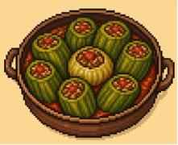

اختر وصفة
معلومات التواصل


تُعد "الكوسا محشي" طبقاً شرق أوسطياً كلاسيكياً يتكون من ثمار الكوسا المفرغة من اللب والمحشوة بخليط من اللحم المفروم المتبل والأرز، حيث تُطهى جميعها على نار هادئة في صلصة طماطم غنية بالنكهة والثوم.
الشيش برك هي عبارة عن العجين المحشوة باللحم والمطبوخة في صلصة اللبن التي لا تُقاوم، وتستحق بجدارة كل دقيقة تُقضى في تحضيرها لأنها من أكثر الأطعمة المحبوبة في سوريا.
في هذه الوصفة، تُحشى أوراق العنب بخليط من الأرز واللحم المفروم والتوابل، وتُطهى في مرق الدجاج بنكهة الليمون وكمية وفيرة من زيت الزيتون حتى تصبح طرية؛ فتمنحك كل لقمة مزيجاً شهياً من الأرز واللحم الطريين بنكهة الليمون، مع أوراق عنب التي تكاد تذوب في الفم.